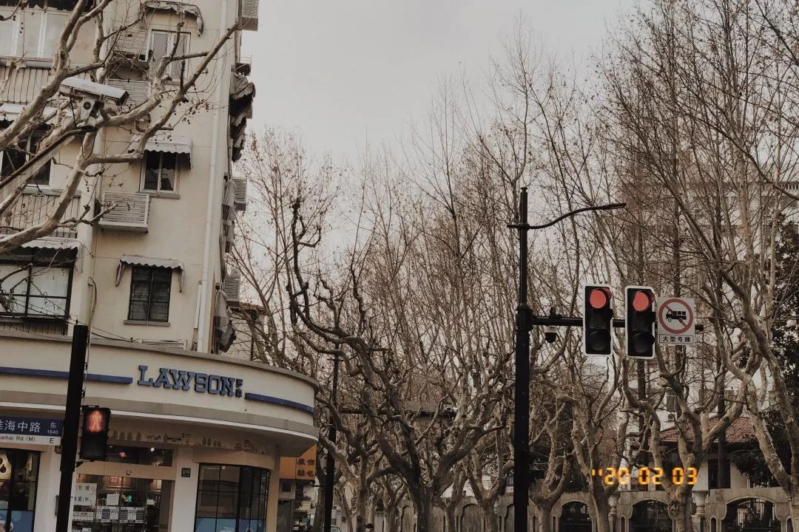
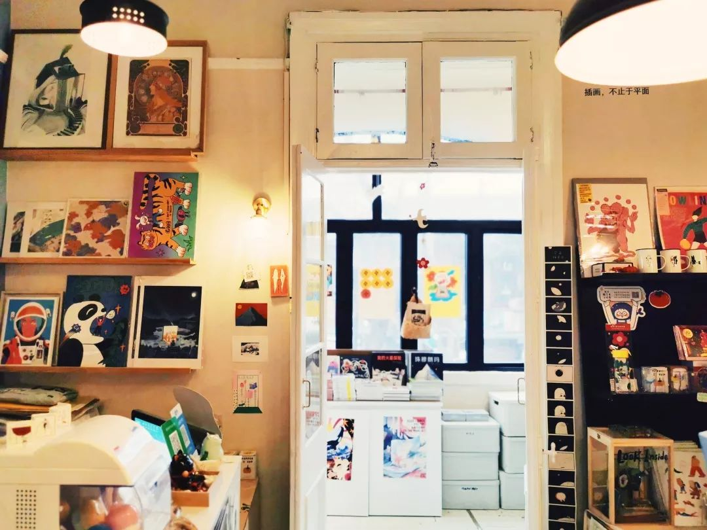
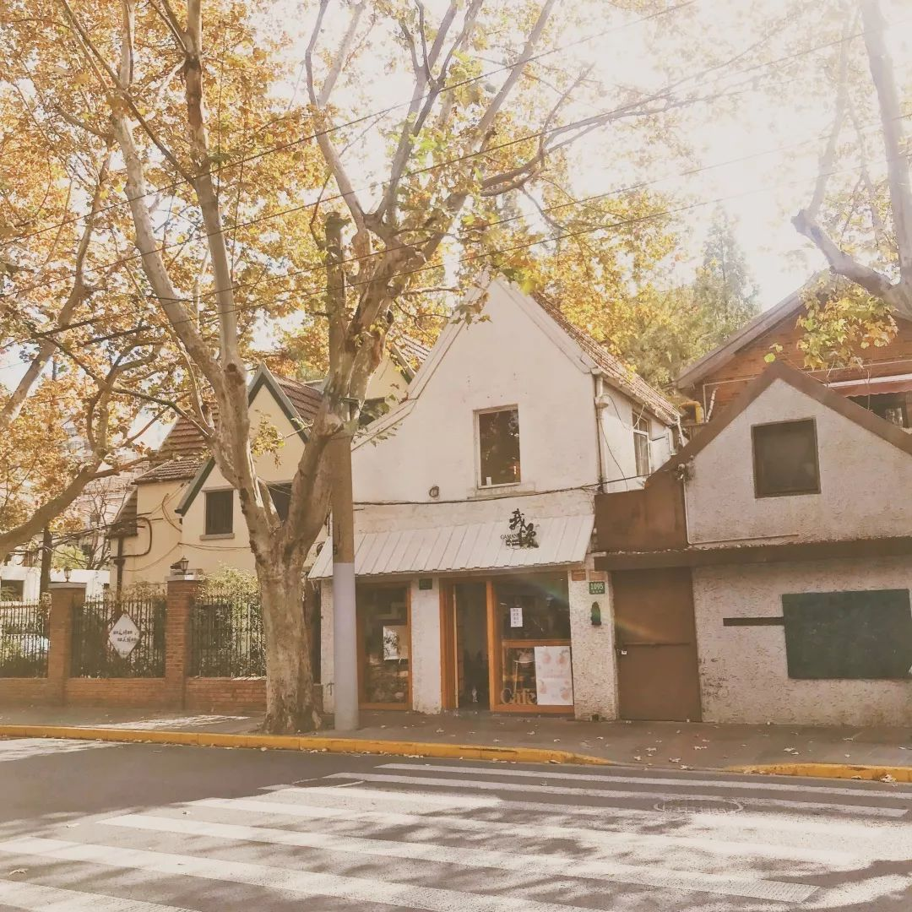
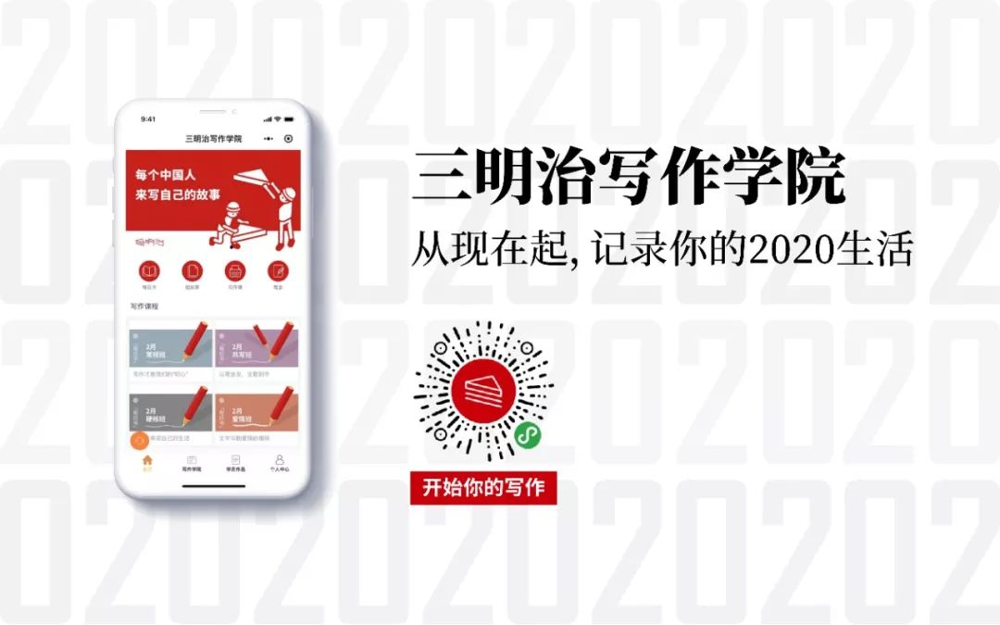

谁来守护武汉人的饭桌
原文链接 备份链接 文/刘雀 编辑/零柒 “都害怕，总得有人往前走一步。” 这是美团买菜武汉融桥站闵捷说的话，他所在站点的马路对面就是疫情定点医院。站点一个员工的咳嗽，就吓退了其他员工，“其实我心里也挺害怕的。我觉得不行，这个工作就摆在这 …

几乎没有看到过上海这么萧瑟的景象，冬天法国梧桐的枝桠本就光秃秃的，将街道原本的模样摊在人们面前。路边的店铺大多都紧锁着门，偶尔能瞥见三三两两的行人，大家也会刻意保持着间距，疾步向前。
这个城市似乎正在隐秘地在进行着一次洗牌。迫于房租、工资、客流等诸多压力，小店们不得不做出应急调整，让自己变得更具生存的适应性。但当疫情开始平缓之后，人们的生活逐渐回归正轨，一切能真的如故吗？
这一次我们采访了5家在上海放有故事通讯的小店，从咖啡馆、酒吧、主题书店到选品杂货店，除了关心大家近期在店铺方面都做了什么决定外，还想要了解他们是如何看待这场混沌风暴随之带来的蝴蝶效应。

采访、撰文 | 奶油
小夜咖啡馆
类型：酒吧+咖啡馆 / 店龄：小夜7年，小小夜1年 / 两家店各2名员工
丁丁的两间店“小夜“和”小小夜“都坐落于日本人集中的古北区。白天的小夜是一间主打日式深烘的咖啡馆，晚上又会摇身变为和风酒吧，熟客大多是日本人。而身在进口超市中的小小夜则与之不同，主要服务于外带的客人。因为疫情突至，丁丁临时决定暂停小夜白天咖啡板块的经营，但却为了酒吧的老客人们，继续着春节晚上不停业的传统。
口述者：丁丁
“期待平稳之后，大家再来好好喝杯咖啡_。_”
2019年春节我骑电瓶车出了车祸，不小心把脚崴了，只好取消掉小夜白天的咖啡部分。所以今年春节要是白天不卖咖啡，也就和去年情况差不多。我看网上说2月2号到9号是爆发期，在咖啡馆堂食发生交叉性感染的可能性还是蛮高的，所以没有开店。10号之后如果疫情数字仍然在往上涨，我们就只能采取限流进店，比如18个位置坐9个人，情愿少赚点，也要让大家安全。
但晚上就有点为难了。酒吧的老客人们都知道我们春节不休息的，这已经是第7年了。所以顾及到这一点，小夜咖啡馆晚上20：00—01：00还是会对外开放。往年的情况是大年三十人蛮多的，初二往后变得少点，等到初六再开始回升。因为老客人们多数是日本人，除夕前后回国的机票比较贵，往返要7、8千，但晚几天走的话，5千就能搞定。
最近这段时间，每晚店里基本只有3、4个客人，这样也刚刚好。大家依旧习惯坐在吧台，我们尽量把每个人中间隔两个空位。今年来的全都是日本客人，其中一部分是留在上海过年的，另一部分是初七回上海之后却发现上班延期了，再飞回去也不太方便，只能在家办公。
日本客人本身的防护措施做得比较好，注重消毒、清洁，平时就有戴口罩的习惯。他们说虽然看到街上的人都在戴口罩，但挺多人戴反了，还叮嘱我铁片要捏一下才能和鼻子更服贴。总的来说，他们的恐慌心理没有我们那么严重，觉得做好防护，问题就不大了，甚至时不时会开玩笑，“现在看到满城都是口罩，感觉不是在上海了，明明是在3、4月份花粉症下的东京啊。”
而另一家店铺“小小夜”因为身在城市超市里，而且本身就定位为外带型咖啡店，传染几率相对不高。这段时间也是营业的。我现在就是两头跑，早上到下午2点在小小夜，晚上再到小夜上班。有个小姑娘会在中午来小小夜接我的班。其他员工之前都放假回家了，遇到现在的情况，临时也找不到人，没办法只能先这样了。
有时间还是会休息一下。我本身就喜欢喝咖啡，但在自己店里喝，会保持着在工作的心态，总归不是很放松。所以大年初一的下午，我就跑去OPS和一木家（上海两家咖啡馆）喝了两杯咖啡。
原本打算4月份在店里开始烘焙咖啡豆，现在只有先把计划放缓了。小夜白天暂停的这段时间我就默默琢磨自己的手艺吧，也可以再好好思考我运营的两家店如何做出区别来。
期待平稳之后大家再来好好喝杯咖啡，不知道这样想是不是有点不思进取。

鲸字号
类型：书店 / 店龄：2年 / 店员3名
2019年夏天，鲸字号书店从上海重庆中路的居民巷弄搬到了繁华的新天地商圈，一度成为了“网红打卡地”，甚至发展到需要客人取号入内。当传染疫情爆发之后，线下实体行业首当其冲会受到直接性的打击影响，但复合型书店鲸字号的主理人张晔说他们已经做好了硬抗三个月的准备。

口述者：张晔
“这个时代一直都在变化，它可能不是慢慢变化，_而是一下子就改变了。_”
我们相比那些重点放在线下的店会好很多，内部还可以承担2月不营业的损失。因为每年线上插画、视觉类课程的收入大概会占到总收入的8成，在没有搬到现在这个地址之前，甚至占到9成。
去年，鲸字号成了所谓的“网红店”，单看线下收入，确实有了一些盈利，但并没有大家想象中那么多。书店好像一直是在鲸字号整体业务里作为辅助的作用，我不会把它放在攻击手的位置。
虽然店铺延期到3月3日才营业，但这个月我还是会先去店里一趟，做些清洁、整理的工作，也当是记录一下这个难得的时期。我们有个店员人就在武汉，不知道会被关到什么时候，还有一个河北的小伙伴，她那边火车已经停了，最近也要看怎么开车去北京再回上海。店内原先计划布置的3月初的展览目前都移到了3月中后期，而且展览不是以吸引人流为主要目的，会更多偏向策划一些衍生品售卖。
本来今年店铺的计划也是要多放一些精力在开发自营文创产品上，把流程系统、主题陈设和产品结构再做升级优化，这些主要是研究客群喜好后做的调整，不完全是为了平销，但也想可以提高客单价。毕竟实体店能够接待的人数是有限的。
其实，好多年前书店只卖书就很难做了，如果靠国家补贴运行下去也是不健康的，大家早就需要考虑新的经营模式以达成收支平衡。很多人认为网购是实体书店很大的对手，但既然意识到了这一点，为什么不把线上业务纳入到整体结构之中呢？尽量还是不要把鸡蛋放在一个篮子里。以上的讨论可能仅限于书店，不是所有行业都需要线上业务，但大体是相通的。
我之前看到一篇文章把未来的书店归结为了几个模式，觉得还是蛮受启发。其中一种模式是会员制书店，它会打包店铺的整体服务，包含不同的活动、优惠、书单等等，然后对社群收取会员费，以此来培养用户的消费习惯和意识。还有一种模式，是像鲸字号一样，属于复合型的，既有自己的主题性选书，也有小型展览、文创品等，整体架构属于比较丰富的状态。
说起来非典那一年正好是淘宝的上升期，那段日子大家都避免出门不去实体店了，情况和现在很像。这一次的疫情如果把很多人的习惯又改变了，市场上再出现一个新的产品模式的话，那对于传统行业的小店就更难做了。这个时代一直都在变化，它可能不是慢慢变化，而是一下就改变了。
我最担心的是，不知道三月之后街上会变成什么样子。如果大家都不敢轻易出门，下班了也避免和朋友聚会、购物，你以前常去的那些店没有了，想做的事情不能做了，一切都要再从头开始……想想还是蛮恐怖的。


月球咖啡
类型：咖啡馆 / 店龄：5年半 / 店员6名
随着确诊人数的增加，上海诸多小区已经开始封锁大门，由于月球咖啡的老店开在安福路居民楼内，现今也只能暂时关门。不过，早在疫情消息出来之前，月球咖啡馆的主理人晓枫已经为月球咖啡的两家店囤好了春节期间所需的全部牛奶……
口述者：晓枫
“大家隔着口罩聊天的机会，大概就这么一次了，_也不希望这样的场景再发生。_”
月球咖啡馆一直都是全年无休的。往年，很多上海的客人过年不想去走亲访友、不想去太热闹的地方，就会和朋友过来安静地喝喝咖啡。我和店里几个小伙伴都是上海本地的，每天还是可以来店里照顾几个小时。
现在整个城市都冷冷清清的，本来初四街上有一些店已经开门了，不过在收到尽量2月10号营业的工商通知后又相继关了。我们在安福路的那家店，开在一个小区里面。前不久，我们发现小区开始限制人员进出了，每天都紧闭着大门，于是也只好按小区的安排关店。
我们另一家店在茂名南路上，是街边店。这几天来的主要是一些老客人，大家在家憋得实在太久了，忍不住到外面放放风。有的朋友一出来就收不住，可以不停歇地聊上一个小时。大家隔着口罩聊天的机会，大概就这么一次了，也不希望这样的场景再发生。
疫情消息刚出来的时候，我们已经做好两家店春节期间的囤货安排了，原先还担心会不够用。现在我预估了一下，今年过年期间，店里浪费的牛奶大概有30瓶左右。真的挺心疼的。所以后来我们都会问店里的客人要不要带瓶牛奶走。
说起来，我们开的两家咖啡馆都是在上海的黄金地段上，即使疫情发生，固定成本是不可能减少的，只能临时进行内部调整，做一些补救方案来应对。
其实有不少人每天都有喝咖啡的需求，但迫于疫情不敢出门，所以今年春节大家对咖啡豆的需求就增加了。往年春节咖啡馆生意很好，我们主要以照顾店里客人为先，没太多时间烘豆子，而最近基本隔一天就要烘焙一次了。今年在这方面的效益确实比以前好，但因为快递原因，实际上也只能提供给江浙沪一带的客人。收入，能补回一部分，但不算多。有时候想想，幸好我们是自家烘焙，成本更低，还可以有喘口气的机会，不然今年春节就真的要睡不着觉了。
不过，这些压力也促使我沉下心思考如何让月球咖啡在现在的环境里有更多适应性。我们以前没有投入特别多的精力在线上运营上面，一直在想怎么在店内给客人提供更好的服务。但经过这件事情之后，我想，或许我们还是要多花些精力在线上了，当以后再次遇到这种突发事件时，可以多一个生存机会。


我慢咖啡生活馆 Gaman Cafe
类型：咖啡馆 / 店龄：3年 / 店员全职2名，兼职5名
“我慢”刚开业的时候就遇上了愚园路修路，时间长达一整年，好不容易缓和过来之后，这一次又因为疫情而选择暂时关店。生活好像被瞬间按下了暂停键，但房租与人员薪资的账单却没有因此停下来，不久前，店长Molly在朋友圈里写下，“咖啡馆的流水只够撑一个月了”。

口述者：Molly
“我看到太多人想要开咖啡馆，
_但是最后又被这个东西牢牢栓住了。_”
我是经历过非典的人，现在回想起来还是很害怕。那时我已经转去四川上学半年多了，爸爸也是在疫情潜伏期之前许久就来看我了，但老师和同学还是因为我们是广东人而要把我们“抓”起来，最后家里人找来各种证明才得以脱身。现在我作为一个在上海生活的人，也能理解当初他们面对未知病毒的紧张心情了，但这个创伤永远是没有办法抚平的。
最近虽然也有别的店在营业，但我个人出于担心，还是决定2月10号之后再开门，不要涉险了，特别当是你的员工和客人有可能因此感染，想想还是挺可怕的。而且，店里有小伙伴是坐火车来的，也想要在家自我隔离一段时间。从目前得到的消息来看，大家都没有发热、发病，但是有发福的情况。
我发了一条朋友圈，说“咖啡馆的流水只够撑一个月了”，这的确是事实。咖啡馆是靠流水过活的，年前我又送了员工去培训，机器上也有重新维修、保养，当时花了挺多钱。但人总是要想办法的，不能说既然我只能支持一个月了，那就关门算了。这家店就像我的宝宝一样，我的员工也需要我按时给他们发工资。开一家店，已经不是我一个人的事情了。
我开店的大多数的日子，好像都是靠借钱熬下去的。2018年，我们店铺所在的愚园路修路修了一整年，很影响客流，那一年也是非常难过。我本来觉得自己是个很坚强的人了，但到了修路的后半期，还是忍不住在店里当着员工的面大哭，打心底里挺绝望的。
我看过太多人想要开咖啡馆，但是最后又被这个东西牢牢拴住了。前段时间我本来有天很低落，就跟一些同行朋友聊天，大家各自说了下自己店里的情况，感觉讲出来之后就好多了，算是难友间的互相安慰吧。相比有些店需要囤很多生鲜或者因为春节滞留了很多员工，我的压力还是小一些。
这几天不用开店，我就在家刷刷剧、做做饭，可始终没法用一种很放松的心态享受这个“多出来的假期”，生活卡在了这里，停滞不前，账单却没有因此停下来。
或许等盛夏的时候会好一些吧，春天本来就是疾病高发的时期。我已经想好了，开门之后在店外挂一个牌子——“救救孩子吧”，欢迎大家都可以进来喝一杯咖啡。我也希望我的供应商们都能够挺过来，大家一起同舟共济。虽然我也知道3月之后，肯定还是会损失一些战友。

OPEN THE MARKET
类型：杂货店 / 店龄：1年 / 2人搭档
碎花队长和Kya是选品店OPEN THE MARKET的创始人，也是店内唯二的员工。她们的店铺开在上海图书馆斜对面，今年大年初五，疫情发展让人心慌，很多店铺都选择延期开业，但碎花队长和Kya还是没有改变原计划，依然复工。在营业第一天，甚至还拍下了一个Vlog，自嘲一般记录了店外空无一人的街道。
口述者：碎花队长

口述者：Kya
“当你发现可以立马上手的事微乎其微时，
_心态就会放平和许多。_”
我们还是按照初五复工的原计划开了门，当时就是抱着玩乐的心态，反正在家也闲不住。复工的第一周，每天接待的客人也就4、5个，大多还是外国人。相对于我们，他们接收到的信息没有那么密集，戒备心也没那么重。
在这样的时期，很多店铺面临的问题都是一样的，只是各家承受的轻重不同罢了。我们两人都在上海，没有其它员工。店铺里大多卖的是文创、服饰等，不存在保质期短的问题。需要负担的成本最重的就是房租了。大家最终还是要恢复到生活的正轨上，所以我们开着店铺也并不一定是件坏事，反而说不定会对路过的人带来一些积极的影响。
不过，这几天来店里营业是假，两个人想见面、互相讨论店铺安排是真。我们一直在研究大家的消费需求，从开店到现在，店内的产品结构一直在调整。当疫情过去之后，客人在心态、习惯上多多少少都会有一些改变，这两天我们就在店里模拟消费者可能存在的心态会有哪些，在这种突发性情况下我们应该备什么货。
当然，有很多事情会暂时被搁置，比如原先开春后会有很多迎合季节的上新计划。我们之前做过一个调查，发现客人对我们自己的原创设计还是抱有很大期待，所以现在在考虑是不是要把所有时间投入到这上面。
在线上运营的部分，我们不想只是把店里现有的产品放到线上卖，但会想在线上做一些有趣的内容，而不是单纯的销售。大家呆在家里那么久了，肯定是会想要往外跑的，这都是阶段性的。况且，我们做线上这件事需要付出的精力和运营线下店是一样的，当你把指针往那边偏过去后，那线下店的魅力一定会有所折扣。
举一个例子，这两年电影院的生意为什么会变得那么好。2000年DVD出来的时候很多人都在追捧，但人还是要跟人社交啊，线下的小店依然有它存在的价值，就看你可以做到什么程度，比线上单纯销售之外能够提供的东西有多少了。
我们是家选品店，开店这一年多时间里，我们一直在想到底是要选自己喜欢的还是大家会喜欢的？最后发现，好像一直在做的都是前者。只有你相信它，才会有信心推荐给信赖你的那群人，这或许也是选品店存在的意义吧。过去我们没有做太多社交网络上的经营，只通过微信群和大家互动，但经过这件事之后，我们想要在线上有更多关于自己态度和观点的表达了。


_
互动话题
_

三明治
_
你喜欢的那些小店，现在还好吗？如果你是店主，也欢迎和我们分享你的故事。

我常去的那家小店…


与三明治一起记录特殊时期的中国城市记忆



原文链接 备份链接 文/刘雀 编辑/零柒 “都害怕，总得有人往前走一步。” 这是美团买菜武汉融桥站闵捷说的话，他所在站点的马路对面就是疫情定点医院。站点一个员工的咳嗽，就吓退了其他员工，“其实我心里也挺害怕的。我觉得不行，这个工作就摆在这 …
原文链接 备份链接 昨天是春节假期后返工第一天，但因为新冠肺炎的影响，注定了是一个不一样的开工日。每日人物询问了10个不同行业已经开工的人，他们正在做的工作，和我们的生活息息相关，记录他们的生活和烦恼，也是记录这次疫情所影响的不同侧面。 …
原文链接 备份链接 只用了8天的时间，一家淘宝店的日销售额从5000多元暴涨到9000多万元。这是新冠肺炎爆发后，疯狂膨胀并异化的口罩市场现状。 疫情突然袭来，口罩这个又小又简单的日用品，成了人们四处抢购的必需品。当药店、超市难以满足需 …
原文链接 备份链接 一场疫情，把不少企业的节奏打乱，旅游业首当其冲。 两三天从高峰跌到低谷，不少企业主称无法作出反应。有民宿老板为春节多买一个冰柜，购置大量鸡鸭、鲜奶；有企业从早到晚开会，讨论春节高峰的应对……这些忙碌的横切面都矗立在1 …
原文链接 备份链接 今天来信的作者彼岸家住哈尔滨，疫情爆发之严重，使得这座远在中国东北方的城市也深受其害。在这段特殊时期里，身兼母亲、妻子、女儿、妹妹等多重角色的作者，渐渐发现家庭中的微妙转变。 居家防疫，一个东北小家庭的转变 撰文：彼 …